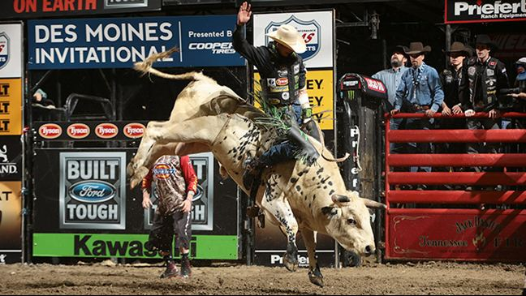

James Burton Mauney nascido em 9 de janeiro de 1987é um ex- cowboy profissional de rodeio americano especializado em montaria em touros . venceu os campeonatos mundiais da PBR em 2013 e 2015
 1.png)
A PBR e os fãs consideram Mauney uma lenda devido aos seus recordes e realizações.
